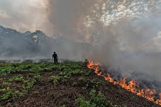

Desforestación de selvas y bosques
Entre los muchos obsequios que nos brindan los bosques se encuentra uno que necesitamos desesperadamente: ayuda para frenar el cambio climático. Los árboles capturan gases de efecto invernadero (GEI) como el dióxido de carbono, evitando que se acumulen en la atmósfera y calienten nuestro planeta. Cuándo talamos bosques, no solo estamos eliminando a nuestro mejor aliado para capturar la asombrosa cantidad de GEI que creamos los humanos (lo que hacemos principalmente quemando combustibles fósiles en instalaciones de energía y, por supuesto, en automóviles, aviones y trenes) . También estamos generando emisiones al talar árboles: cuando se talan árboles, liberan a la atmósfera todo el carbono que han estado almacenando. Lo que los deforesta dores hacen con los árboles talados, ya sea dejándolos pudrirse en el suelo del bosque o quemándolos, genera más emisiones. En total, la deforestación por sí sola causa alrededor del 10 por ciento de las emisiones mundiales. Sabiendo que la deforestación nos roba un arma crucial en la batalla contra el cambio climático y genera más emisiones.
La eliminación de la capa vegetal arrebata a los bosques y selvas de sus palios naturales, que bloquean los rayos solares durante el día y mantienen el calor durante la noche. Este trastorno contribuye a la aparición de cambios de temperatura más extremos que pueden ser nocivos para las plantas y animales. Los árboles desempeñan un papel crucial en la absorción de gases de efecto invernadero, responsables del calentamiento global. Tener menos bosques significa emitir más cantidad de gases de efecto invernadero a la atmósfera y una mayor velocidad y gravedad del cambio climático.
La solución más rápida a la deforestación es, sencillamente, interrumpir la tala de árboles. Aunque el ritmo de deforestación se ha ralentizado un poco en los últimos años, las realidades financieras actuales hacen de esta solución una alternativa poco probable.
La solución más viable sería gestionar los recursos vegetales cuidadosamente mediante la eliminación de los despejes agrícolas para asegurar que los entornos forestales permanecen intactos. La tala que se realice debe hacerse de forma balanceada mediante la plantación de suficiente árboles jóvenes que sustituyan a los más viejos en todos los bosques y selvas. El número de nuevas plantaciones de árboles aumenta cada año, pero el total todavía equivale a una ínfima parte del área forestal del planeta.

¿Qué provoca la deforestación de los bosques?
La deforestación tiene muchos efectos negativos para el medio ambiente. El impacto más dramático es la pérdida del hábitat de millones de especies. Setenta por ciento de los animales y plantas habitan los bosques de la Tierra y muchos no pueden sobrevivir la deforestación que destruye su medio.
La principal causa de la deforestación es la agricultura insostenible e ilegal, que da pie a cultivos comerciales como el aceite de palma y el caucho. La realidad sobre la deforestación es impresionante: los bosques están desapareciendo a un ritmo equivalente a 27 campos de fútbol por minuto.

¿Qué es la deforestación de bosques?c
La deforestación es la pérdida de bosques y selvas debido al impacto de actividades humanas o causas naturales. México ocupa uno de los primeros lugares en tasas de deforestación en el mundo.

¿Cuáles son las consecuencias de la tala de árboles?
Ponen en riesgo el bienestar de las personas y el patrimonio natural del país. Causan el desplazamiento de poblaciones originarias. Aceleran la pérdida de los suelos, de la fauna, de la flora y de la biodiversidad. La deforestación de bosques conduce a la desertificación y a la escasez de agua.